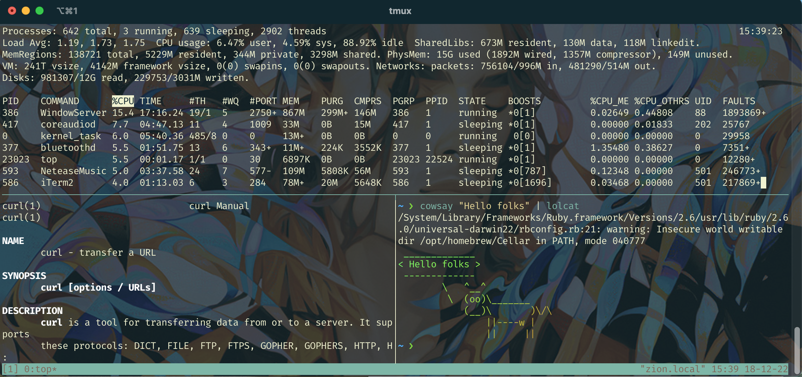

6.Null-4 命令行环境部署
本文主要介绍如何在shell中运行多个进程，如何停止或暂停进程以及如何让进程在后台运行。之后还会讲解如何配置dotfile以及用SSH处理远程计算机。
Job控制
当我们需要中断job时，通常是因为命令完成时间过长（比如因为网络问题导致brew update卡住），可以执行Ctrl-C，它本质上是让shell向进程传递SIGINT信号。shell使用一种称为信号的UNIX通信机制向进程传递信息从而改变执行流程，因此信号是软件中断。
下面的Python程序会捕获SIGINT信号，我们如果想要停止它，可以使用SIGQUIT，即键入Ctrl-\。
1 | #!/usr/bin/python3 |
1 | ~/tmp ❯ ./sigin.py |
在终端中打印显示的^就是Ctrl。除了SIGINT和SIGQUIT外，还有SIGSTOP也很常用，键入Ctrl-Z可以让作业暂停。此外，我们还可以用fg或者bg分别继续前台或后台暂停的作业。
1 | ~ ❯ jobs |
点击here可以查看更多信号相关信息，或者直接键入man signal查看。
终端多路复用器
一次性运行多个任务的时候，我们可以同时开多个终端窗口监视它们进度，但在命令行界面使用终端多路复用器是一种更加通用的解决方案，尤其在远程连接机器的时候。

最流行的终端多路复用器就是tmux，可以自己配置快捷键来快速创建和切换标签和界面。在tmux中，一个session就是一个独立的工作空间可以有多个窗口，而一个窗口就是一个可视标签同一个session可以切割出多个窗口，一个窗口可以分为多个pane。
- Sessions
tmux打开一个新的sessiontmux new -s NAME打开一个新的session并命名tmux ls列出当前sessions<C-b> d在session内部键入这个命令可以退出当前sessiontmux a进入上一个session，也可以用-t进入指定session
- Windows
<C-b> c创建一个新窗口<C-b> N切换到第N个窗口<C-b> p切换到上一个窗口<C-b> n切换到下一个窗口<C-b> ，重命名当前窗口<C-b> w列出所有窗口
- Panes
<C-b> "水平切割窗口<C-b> %竖直切割窗口<C-b> <direction>朝特定方向移动pane<C-b> z放大当前pane
这里有关于tmux的快速教程。
别名
shell支持aliasing，即用一个较短的指令作为一个长命令的别名从而减少我们的工作量，通常的用法如下：
1 | alias alias_name="command_to_alias arg1 arg2" |
比较常用过的设定有：
1 | # Make shorthands for common flags |
如果要将别名持久化，我们需要将其配置到shell启动文件中，比如**.bashrc或者.zshrc，这些文件又被称为dotfile**。
Dotfiles
许多程序都会用一个以.开头的文本文件作为配置文件，我们称这些文件为dotfiles，当我们输入ls时它们默认隐藏。shell在启动时会读取很多文件并加载其配置，根据shell的不同，无论是登录还是交互都很复杂，这里是关于这个问题的参考。
每个人都会对自己的dotfiles有特别的配置，除了助教们的配置外Anish, Jon, Jose，这里有一些很棒的资料可以参考。
远程连接
我们可以通过使用Secure Shell即SSH来远程连接计算机，通常输入这样的一条指令:
1 | ssh foo@bar.mid.edu |
这里我们尝试以用户foo去登录服务器bar.mid.edu，服务器既可以用URL表示也可以用IP表示。我们利用ssh-keygen生成密钥对，当有多套密钥对时可以用ssh-agent去管理。
1 | ssh-keygen -o -a 100 -t ed25519 -f ~/.ssh/id_ed25519 |
为了不用每次都输入密码这么麻烦，我们可以将我们的公钥复制到远程计算机，因为ssh会检查.ssh/authorized_keys来决定哪些客户可以直接连接：
1 | # 直接复制文件 |
当我们想通过ssh复制文件时，可以用scp命令scp path/to/local_file remote_host:path/to/remote_file
Exercises
1.通过类似ps aux ｜ grep这样的命令去查找并杀死一个job。现在启动一个job，指令是sleep 1000，然后用Ctrl-Z暂停:
1 | ❯ sleep 10000 |
2.